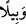

halkına gönderilmiş demektir. Bu nedenle Allah kuruntu ve sebepsiz kuşku içerisinde
olan bâzı kimselerin bu kuşkularının giderilmesi için Kur’an-ı Kerim’de; “Biz seni
bütün insanlara ancak müjdeleyici ve uyarıcı olarak gönderdik.” (Seb’e, 34/28)
buyurmuştur.
“Şâhidlik edecek” ifâdesi ile kasdedilen mânâ, “bu peygamberin, sizin işlemiş
olduğunuz inkâr ve isyâna kıyâmet günü şâhidlik edecek demektir. Hz. Peygamber’in bu
şâhidliği sâdece size değil, “Her bir ümmetten bir şâhid getirdiğimiz ve seni de
onlara şâhid olarak gösterdiğimiz zaman hâlleri nice olacak!” (en-Nisa, 4/41)
âyetinde belirtildiği gibi diğer ümmetlere de olacaktır.
16. Ama Fir’avun o peygambere karşı gelmiş, biz de onu ağır ve çetin bir şekilde
muaheze etmiştik.
“Ama Fir’avn” kendisine gönderdiğimiz “o peygambere karşı gelmiş,” kibirden ve
nimet içerisinde yüzdüğü için kendisine göndermiş olduğumuz peygambere karşı çıktı.
Bir başka ifâdeyle; Biz size peygamber gönderdik ve siz o peygambere karşı geldiniz.
Nitekim bu durumu Allah’ın “size de şâhidlik edecek” ifâdesi dile getirmektedir. İşte siz
gönderdiğimiz bu peygambere karşı çıktınız. Tıpkı Fir’avn’a bir peygamber gönderip de
onun bu peygamberin peygamberliğini inkâr edip kendisine karşı gelmesi gibi... Son iki
âyette Fir’avn ve rasûl kelimelerinin tekrar zikredilmesi onun isyanının ne kadar
korkunç olduğunu ve bu karşı gelişin “Mûsa’ya karşı geliş” değil “rasûle karşı geliş”
olduğunu vurgulamak içindir. Bu âyet-i kerîmede Fir’avn’un etrafında yer alan “ileri
gelenler”in zikredilmeyişleri işâret ediyor ki onların her biri kendi isyanları açısından
sanki birer Fir’avn gibidirler.
“Biz de” isyânı nedeniyle “onu” tahammül edilemeyecek, dayanılamayacak “ağır ve
çetin bir şekilde muâheze etmiştik.” “Ağır” diye tercüme edilen “
/vebîl” kelimesi
ağır ve sert demektir. Kelimenin kökündeki bu anlam dolayısıyla iri damlalı yağmura
Arapçada “vabîl” derler. Bu son ifâde yukarda yapılan benzetmenin dışındadır. Amacı
onların başına gelen kötü âkıbetin çâresiz olarak bunlarında başına geleceğine dikkat
çekmektir.
17. Peki inkâr ederseniz, çocukları ak saçlı ihtiyarlara çevirecek o günden
kendinizi nasıl koruyabileceksiniz?